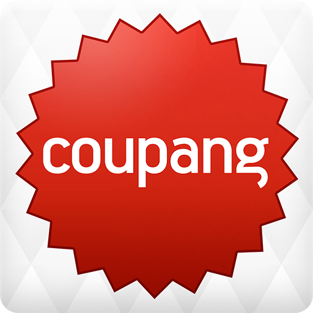
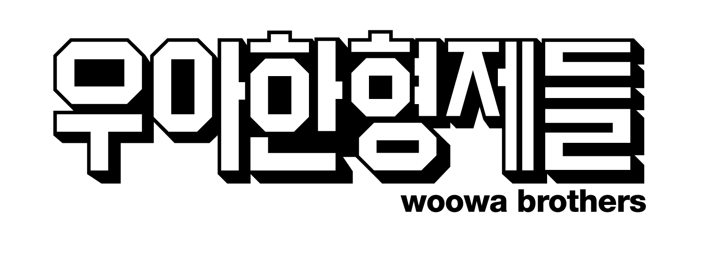
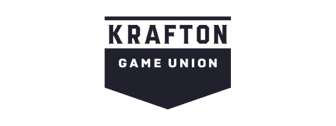

벤처기업협회에서는 벤처기업(스타트업)을 '개인 또는 소수의 창업인이 위험성은 크지만 성공할 경우 높은 기대수익이 예상되는 신기술과 아이디어를 독자적인 기반 위에서 사업화하려는 신생 중소기업으로 정의하고
있다.
주로 미국의 반도체사, 소프트웨어 회사, 닷컴 서비스 분야 기업들이 모두 벤처나 스타트업 형태로 시작한 사례이고 벤처/스타트업의 원조 기업들이라 할수 있다. 참고로, 미국에서 조차 스타트업의 성공 확률은 1%
미만이다. 시장궁합성을 찾을 때까지 끊임없이 사업 아이템을 수정하는 경우가 많다. 아예 다른 방향으로 사업을 전환(pivot)하여 대박이 나는 경우도 있다.
목차
역사
Startup, Venture business / 벤처기업, 모험기업, 개척기업
신생 창업기업을 뜻하는 말로 미국 실리콘밸리에서 처음 사용되었다. 혁신적인 기술과 아이디어를 보유하고 투자를 받기보다는 종자돈으로 시작하는 경우가 많고 기술 기반 회사의 성공 사례가 많다.
유니콘 기업
기업가치가 10억 달러 이상[1]인 비상장 스타트업을 이르는 말이다.
스타트업이 상장 전에 기업 가치 10억 달러 이상 성장하는 것은 상상 속에서나 존재하는 유니콘과 같이 희귀하다는 의미로 사용됐다. 2013년 벤처 투자자 에일린 리가 처음으로 사용했다.
쿠팡

Coupang의 로고
본래 소셜커머스에 속하여 위메프-티몬과 함께 소셜 3사로 통하던 시절이 있었다. 쿠팡이라는 이름도 "쿠폰이 팡팡 터지는 곳"이라는 뜻이라는 언론 보도가 있었지만 공식적으로 부인했다. 현재는 소셜커머스라는 업종
자체의 의미가 퇴색한 지 오래이기 때문에 사실상 3곳 모두 온라인 종합 쇼핑몰 또는 오픈마켓이라고 보는 것이 타당한 분류라고 할 수 있다. 다만 쿠팡은 스스로 아이템 마켓이라 칭하고 있다. 2014년부터 익일
배송을 내세운 자체 배송 서비스 로켓배송을 도입했다.
우아한 형제들

우아한 형제들의 로고
'배달의민족'은 디자이너 출신인 김봉진 대표가 설립한 스타트업 '우아한형제들'에서 개발했으며, 애플리케이션은 2010년 6월에 먼저 출시되었고, 회사는 애플리케이션이 출시된 지 5개월 뒤에 설립되었다. 해당 브랜드를
다룬 책 『배민다움』(홍성태 지음, 북스톤 출판)에선 이름의 이유를 "젊은 친구들이 이것저것 많이 배달 음식을 시켜먹는다는 의미에서 배달의 민족이라고도 하고 밝은 땅에 사는 민족이라는 중의적 의미가 있죠"라고
밝혔다.
배달의 민족의 로고
크래프톤

Krafton의 로고
본래 엔씨소프트의 리니지 시리즈 핵심 개발자들로 이루어진 초대형 프로젝트 '리니지3'팀으로부터 출발했다. 이들은 NC 특유의 폐쇄적이고 경영진 중심의 구조를 마음에 안들어했고, 따로 스튜디오 설립을 요구했지만
프로젝트 잠정 중단 처분을 받자 팀 참여 인원 중 90퍼센트가 사표를 내서 독립, 설립 당시에는 블루홀 스튜디오로 출발하였다.